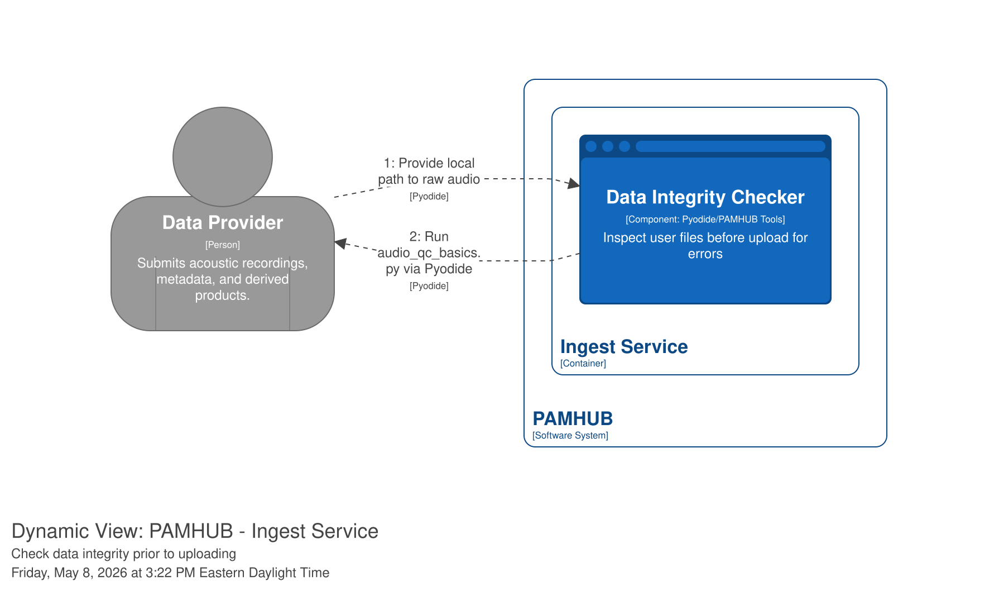
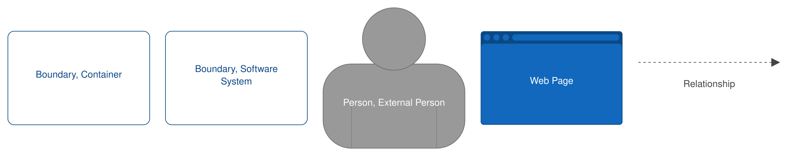

Use Case: Pre-upload Data Integrity Check
ID: UC-011
Primary Actor: Data provider
Goal: Ensure all files on local disk are present prior to upload. Identify suspect temporal gaps in record.
1. Descriptions
- Trigger: Data Provider intends to upload a directory full of raw audio files.
- Pre-conditions: User is logged in to Asset Manager or Upload Checker webapp. All files are available in local disk.
- Basic Flow: The "Happy Path" where everything goes as expected.
- Alternative Flows: Identify gaps and rectify, rerun checker
- Priority: Low
2. Basic Flow (Happy Path)
- Data Provider logs in to Asset Manager (or Pyiodide webapp)
- Select "Upload Data"
- System prompts user to run data integrity check prior to upload.
- Data Provider initiates integrity check and provides local path to directory of raw auido files.
- System runs tests to identify common errors (long gaps in the middle of a deployment.)
- System provides report of findings.
- Data Provider addresses issues, reruns tests. (Repeat as needed)
- When satisfied, Data Provider proceeds to Upload Data step.
Example
An example of basic data integrity tool that can be run in a web browser on the client side is available in the GitHub repo here.. It performs a basic check of data gaps based on file names and duration. The script of interest is audio_qc_basics_UI.py. It can be deployed online serverless using Pyodide.
3. Alternative / Exception Flows
What conditions would lead to the user choosing to download "PAMHUB Tools" and running integrity checks locally?
3.1 Pyodide integrity checker won't run
System displays error message. Use case returns to Step 1 of Basic Flow.
Note
Consider deploying PAMHUB_tools as a client application run locally, not through webapp.
3.2 [Condition B] (e.g., Out of Stock)
System suggests alternative products. Use case terminates.
4. Special Requirements
[e.g., Response time must be under 2 seconds] [e.g., Mobile responsive layout required]
5. Diagrams and references
Use these resources to elaborate the use case and clarify the intent before diving in to the solutions.
Simple diagram.

